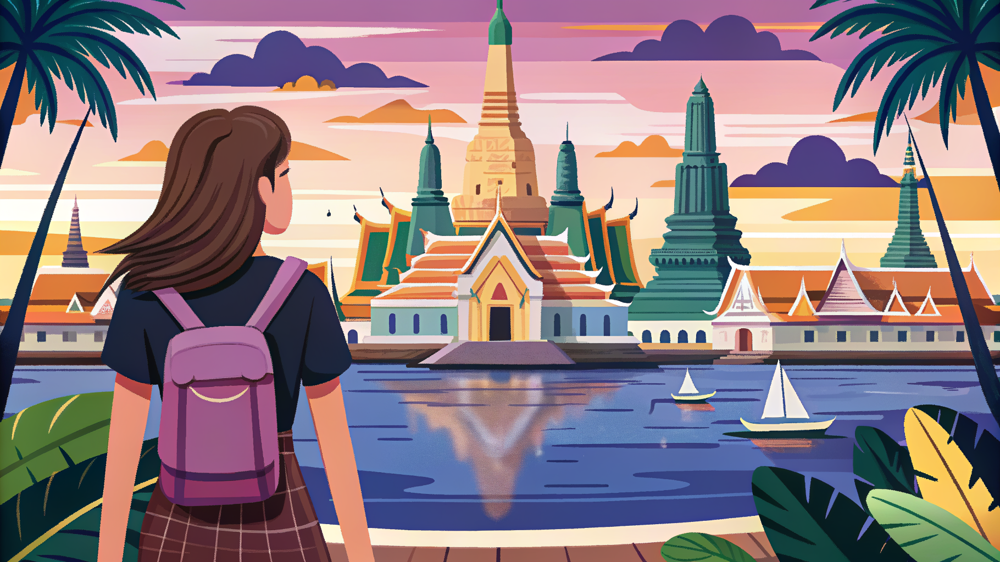

มีอันนี้ไหม?
ミー アン ニー マイ ＝「これはありますか？」
この画面を店員さんに見せてください

| 日本語 | タイ語 / 読み方 | |
|---|---|---|
| 👋 あいさつ | ||
| こんにちは | สวัสดีサワッディー | |
| 元気ですか？ | สบายดีไหม?サバイディー マイ？ | |
| 元気です | สบายดีサバイディー | |
| さようなら | ลาก่อนラーコン | |
| 綺麗ですね！ | สวยมาก!スワイ マーク！ | |
| 🙏 基本表現 | ||
| ありがとう | ขอบคุณコップクン（クラップ/カー） | |
| ごめんなさい | ขอโทษコートート | |
| 大丈夫・気にしないで | ไม่เป็นไรマイペンライ | |
| はい / いいえ | ใช่ / ไม่ใช่チャイ / マイチャイ | |
| 名前は〜です | ผม/ฉันชื่อ ～ポム/チャン チュー ～ | |
| 日本人です | เป็นคนญี่ปุ่นペン コン イープン | |
| 🍽️ レストラン・ショッピング | ||
| おいしい！ | อร่อย!アロイ！ | |
| 辛い | เผ็ดペット | |
| 辛くしないでください | ไม่เผ็ดマイペット | |
| 〜はありますか？ | มี ～ ไหม?ミー ～ マイ？ | |
| お会計お願いします | เก็บเงินด้วยゲップグン ドゥアイ | |
| いくらですか？ | ราคาเท่าไหร่?ラーカー タオライ？ | |
| トイレどこですか？ | ห้องน้ำอยู่ไหน?ホンナム ユー ナイ？ | |
| これください | ขออันนี้コー アン ニー | |
| 高い・安くしてください | แพงไป ลดได้ไหม?ペーン パイ、ロット ダイ マイ？ | |
| 🔢 数字 | ||
| 0〜5 | ศูนย์・หนึ่ง・สอง・สาม・สี่・ห้าスーン・ヌン・ソーン・サーム・シー・ハー | |
| 6〜10 | หก・เจ็ด・แปด・เก้า・สิบホック・ジェット・ペート・ガーオ・シップ | |
SIM・変換プラグ・保険まで、忘れがちな持ち物を一覧にまとめました。